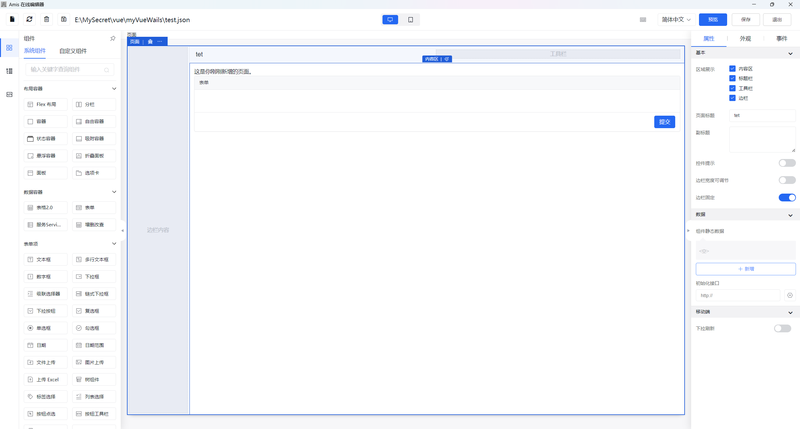
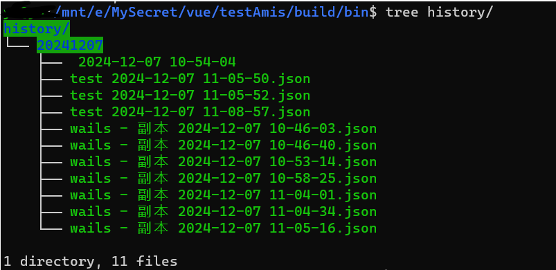

之前介绍过使用wails来编写桌面客户端，最近又有在使用百度的前端低代码框架——amis，是使用JSON配置来生成页面的。对于大部分常用的页面，使用低代码生成，还是比较好用的，前提是后续需求别太复杂。
而在使用amis过程中，发现编写JSON时，使用amis 可视化编辑器编写会比较方便一点，但有一个问题，就是在网页上编写完页面后，要复制到本地文件中。所以客户端的价值就是打通和本地文件的交互了。
使用库amis-editor-demo和wails-react-template。
amis v6.9.0、wails v2.9.2、node v18.18.0
客户端截图

增加了选择本地文件，或保存内容到文件的操作，另外保存按钮若有文件则保存在文件以及localStorage中，无文件则正常保存在localStorage。
另外实现了一个保存历史文件的功能，若设置了本地文件，则会在保存时，也会在执行文件下新建一个历史备份文件。

问题
代理的问题
wails比较奇怪的地方是在build的镜像，它的网络协议地址是http://wails.localhost，不是正常的本地localhost这样，所以默认在amis中，不加域名请求接口的话，接口前缀会被带上wails.localhost，例如http://wails.localhost/api/v1/test/xxxxx这样的。所以需要手动的对fetcher进行一些修改，对所有发起的请求加一个自定义的域名前缀，例如我这里改为了http://127.0.0.1:32155。
CORS问题
因为浏览器安全规则的原因，所以跨域的限制是避免不了的，跨域的解决方式可以使用Nginx来解决。但我这里利用wails的Go语言挂了一个代理，监听32155端口，处理前端的接口请求，使用到的库是net/http/httputil。
1
2
3
4
5
6
7
8
9
10
11
12
13
14
15
16
17
18
19
20
21
22
23
24
25
26
27
28
29
30
31
32
33
34
35
36
37
38
39
40
41
42
43
44
45
46
47
48
49
50
51
52
53
54
55
56
57
58
59
60
61
62
63
64
65
66
|
type ProxyHandler struct {
proxies map[string]*httputil.ReverseProxy
sortedPaths []string
}
func NewProxyHandler(config *Config) (*ProxyHandler, error) {
handler := &ProxyHandler{
proxies: make(map[string]*httputil.ReverseProxy),
}
for _, proxyConfig := range config.Proxies {
targetURL, err := url.Parse(proxyConfig.Target)
if err != nil {
return nil, err
}
proxy := httputil.NewSingleHostReverseProxy(targetURL)
originalDirector := proxy.Director
proxy.Director = func(req *http.Request) {
originalDirector(req)
req.Host = targetURL.Host
......
}
proxy.ModifyResponse = func(resp *http.Response) error {
......
return nil
}
handler.proxies[proxyConfig.Path] = proxy
}
for path := range handler.proxies {
handler.sortedPaths = append(handler.sortedPaths, path)
}
sort.Slice(handler.sortedPaths, func(i, j int) bool {
return len(handler.sortedPaths[i]) > len(handler.sortedPaths[j])
})
return handler, nil
}
func (h *ProxyHandler) ServeHTTP(c *gin.Context) {
requestPath := c.Request.URL.Path
for _, path := range h.sortedPaths {
if strings.HasPrefix(requestPath, path) {
proxy := h.proxies[path]
proxy.ServeHTTP(c.Writer, c.Request)
return
}
}
c.JSON(http.StatusNotFound, gin.H{"message": "Not found"})
}
|
配置文件：
1
2
3
4
5
6
7
8
9
10
11
12
13
14
| proxies:
- path: "/test"
target: "http://localhost:4001"
headers:
- key: "X-Proxy-Header"
value: "Value1"
- path: "/api"
target: "http://localhost:4001"
headers:
- key: "X-API-Header"
value: "Value2"
proxy_headers:
- key: "X-Custom-Header-1"
value: "CustomValue1"
|
下载文件
下载文件会报错：Should have "Content-Disposition" in Header。
如issue所述——9265。我在解决时，没有查到这个解决方式，所以我用了另一个方式解决，后面也用了这个方式解决了，但是未解决，就不再尝试了（打包时间非常长，3min+）。
修改fetcher函数。
1
2
3
4
5
6
7
8
9
10
| if (method !== 'post' && method !== 'put' && method !== 'patch') {
......
增加返回值的处理流程
return (axios as any)[method](url, config).then(response => {
.......
return response;
});
}
|
还是会有提示，不过还是能正常下载了。Should have "Content-Disposition" in Header
image类型不走fetcher
还记得我们前面，我们设置了一个全局拦截器，是在fetcher中实现的，这里面设置了域名以及Header，但是image不走fetcher，这就比较难崩了，所以image还不能直接使用这种方式去请求。
1
2
3
4
5
| {
"imageMode": "original",
"src": "/api/v1/download/image?id=${id}",
"type": "image"
}
|
可以使用其他方式替换，例如使用api将图片数据请求过来，然后使用tpl组件，用原生img来处理图片显示的事情。
涉及到的修改的文件
修改的库：amis-editor-demo。
/route/Editor.tsx，Editor上的按钮以及对文件的处理。
本文标题：Amis-Editor低代码编辑器-桌面客户端
文章作者：小师
发布时间：2024-12-07
最后更新：2024-12-08
原始链接：chunlife.top/2024/12/07/Amis-Editor低代码编辑器-桌面客户端/
版权声明：本站所有文章均采用知识共享署名4.0国际许可协议进行许可